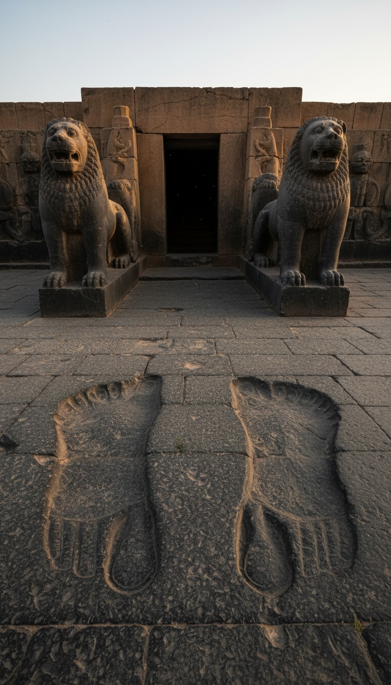

A temple built on the same plan as Solomon's Temple has footprints carved into its floor for a god sixty-five feet tall.
The temple is Ain Dara, on a hill above the Afrin River in northwest Syria, about forty miles northwest of Aleppo. Its foundations are nearly three thousand years old. Its walls are lined with carved basalt lions and sphinxes. And cut into its thresholds are the bare feet of something that walked in through the front door and kept going.

A Basalt Lion in a Field, 1955
Ain Dara announced itself by accident. In 1955 a colossal basalt lion turned up on the mound, and Syria's antiquities service marked the site.
Full excavation came between 1980 and 1985 under the Syrian archaeologist Ali Abu Assaf. He published the results in 1990 as Der Tempel von 'Ain Dara. He dated the building's three phases from about 1300 BC to 740 BC.
What he cleared was a Syro-Hittite temple on a raised platform. Its outer walls were faced with carved basalt slabs: lions, sphinxes, winged guardians, and mountain gods. The whole building was dressed to look watched from every side.
More Than Thirty Matches With First Kings Six
In the May/June 2000 issue of Biblical Archaeology Review, archaeologist John Monson laid the two plans side by side. His title carried the verdict: "The New 'Ain Dara Temple: Closest Solomonic Parallel."
The match starts with the layout. First Kings 6 describes three rooms in a straight line: a porch, the ulam; a main hall, the hekal; and an inner sanctuary, the debir. Ain Dara has the same three rooms, in the same order, on the same axis.
Then the details stack in threes. Two pillars stood at the Ain Dara entrance, the way Jachin and Boaz stood at Solomon's porch in First Kings 7:21. Side chambers wrapped the building, the way First Kings 6:5 describes chambers built against the temple walls. Lions and cherubim covered the stone, the same imagery First Kings 6:29 and 7:29 carve into Solomon's house.
Monson counted more than thirty shared features. No other excavated temple in the ancient Near East comes closer. Ain Dara is the blueprint the Bible describes, standing in basalt, in a city whose first temple phase is three centuries older than Solomon's.
The Footprints at the Threshold
Then you reach the door. Carved into the stone thresholds are giant bare footprints, each close to one meter long. That is a little over three feet from heel to toe.
They come in a sequence. A pair of feet stands side by side at the entrance to the porch. A single left foot is cut into the next threshold. A single right foot is cut into the threshold of the main hall, roughly thirty feet further in.
That is one step. Thirty feet, heel to heel. A human step runs a little under half of body height. Run the same ratio on a thirty-foot step and you get a walker around sixty-five feet tall. A meter-long foot gives the same answer from the other direction.
Someone measured that stride before a chisel ever touched the stone. The prints sit exactly on the doorways. The building and the feet were laid out as one design, with the giant's pace built into the floor plan.
The steps walk in. They stop at the door of the holy room. Someone carved the stride of a god sixty-five feet tall, and the Bible's temple follows the same floor plan.
The Statue Theory Stops at the Door
The tidy answer in the textbooks says the footprints mark where a cult statue stood. Put that answer against the stone and it breaks. A statue stands on two feet, in one spot. These feet move: a pair, then a left, then a right, each one deeper inside the building than the last.
The man who made Ain Dara famous read the floor the same way. Monson described the prints as the presence of the deity entering the temple, the god's arrival walked into the threshold. The archaeologist who put Ain Dara next to Solomon saw a walker.
And the walk ends at the threshold of the main hall, the doorway to the holy room. That is exactly where a god would cross into the space built for him. It is also exactly where every human worshipper had to stop.
"The Place of the Soles of My Feet"
The Bible says the same thing in plain words. In Ezekiel 43:7 the voice inside the temple speaks: "Son of man, the place of my throne, and the place of the soles of my feet, where I will dwell in the midst of the children of Israel for ever." The temple is defined by where the feet go.
Isaiah 66:1 gives the scale: "The heaven is my throne, and the earth is my footstool." The God of the temple has a throne, has feet, and has a size measured against the whole world.
Then the Bible names the giants outright. Genesis 6:4: "There were giants in the earth in those days." Numbers 13:33: the spies felt like grasshoppers beside the sons of Anak. Deuteronomy 3:11: the iron bed of Og, king of Bashan, nine cubits long. Three books, three receipts, one world where the builders lived next door to giants.
January 2018: The Floor Plan Under Fire
In January 2018, during Turkey's Operation Olive Branch in the Afrin region, airstrikes hit Ain Dara. Syria's Directorate-General of Antiquities and Museums reported that about sixty percent of the temple was destroyed.
Lions that had guarded those walls for close to three thousand years were cracked and thrown across the platform in a single offensive. Photographs from the site after the strikes show craters where the temple courtyard stood.
Jerusalem's Temple Mount has never been opened to excavation. Ain Dara was the one place on Earth where you could stand inside the plan of First Kings six and look down at a giant's stride. In 2018 that place was bombed.
Put the receipts in a row. A floor plan that matches First Kings six more closely than any temple ever dug. A stride carved for a walker sixty-five feet tall. A verse where God names the place of the soles of his feet as his home inside the temple.
The Bible's temple was copied from a building made for a giant to walk into. The footprints go in. None of them come back out. So where did he go after he crossed that door, and who carved steps for a god that size? Tell me in the comments.
Before you go
7 books the Vatican doesn't want you reading. Free PDF — the texts they cut, with sources. Joined by 140+ Inner Circle members.
No spam. Unsubscribe anytime.
Go deeper
The Hidden Canon, Vol. I — Enoch. Jubilees. Thomas. Mary. Judas. 90 pages, 14 chapters, every receipt cited. The books your Bible quietly removed.
Read the Canon →Books that informed this investigation
As an Amazon Associate, Hidden Epoch earns from qualifying purchases. Cost to you: nothing.
Research safely
The VPN we use to research without being tracked. First 3 months free.
Get NordVPN →